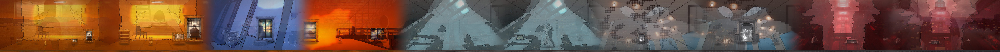
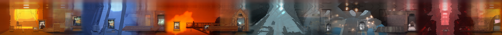
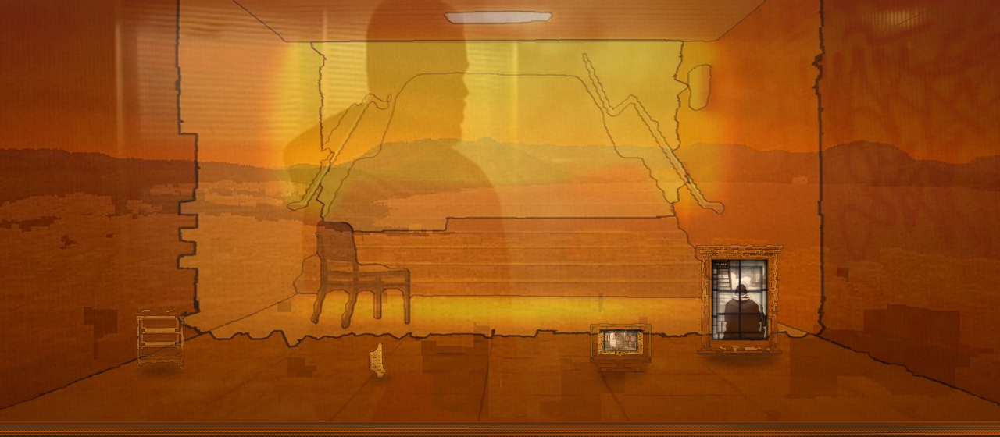
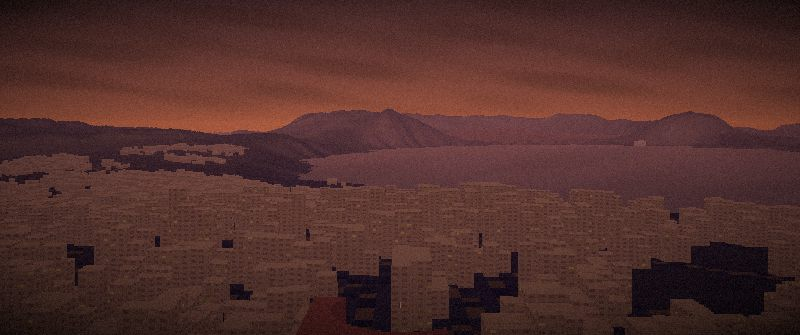
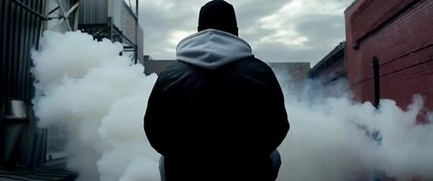

Build On Top Of & Through Inverse Topology & The Foundry
In inverse.html, every reference frame is segmented into sky, water, city, street, forest, meadow, beach, and rock, and sculpts the 6 Foundry worlds at an exact camera position, elevation, and heading. Here you build through the frame (using the panoptic mask to open sky, water, and window apertures into the reference image or multiplane stage) and on top of the frame (placing WYGWYL cut-out actors and props on the sculpted ground plane, automatically scaled by metric distance in meters). Every composite can be saved directly to the PNG Grid Browser.
1. Select Poem, Reference & World
2. Through-Frame & Panoptic Sliders
3. Click to Add Cut-Out Cast & Props
4. Active Staged Layers (Drag on Canvas)
5. Sculpted Island Map & Camera Pin
Inverse topology — the shots shape the land
We already have extraordinary shots for these poems: the generated stills of every shot in the bible, the MARKOV_POET clips routed stanza by stanza, the archive footage the Cineosis forage found for each beat, the Halfworld frames. Forward, a world is grown and then photographed. Here it runs the other way: start from the best images for each poem and ask what the land must be for that frame to exist — then sculpt every world toward it.
Bigger than this — now built & interactive
Each world, before and after its shots
Tap a map to compare the world before the references shaped it and after. Pink wedges are the cameras the inverse search found.
Poem by poem (104 References · 168 Sculpted Wedges · Pre-Built Triple PNGs)
The Foundry — worlds read against the poems, and against a builder
“Our language can be seen as an ancient city: a maze of little streets and squares, of old and new houses, and of houses with additions from various periods; and this surrounded by a multitude of new boroughs with straight regular streets and uniform houses.” — Wittgenstein, §18
Each poem, across the worlds
What the camera stand at each poem actually sees in the best worlds, lit by the poem’s own hour. Tap a frame to inspect its world, or click 🔨 Build On Stand to layer our multiplane cut-out scenes on top.
The niches (Water: Dry → Drowned × Grid: Lattice → Maze)
Stepping stones
The least familiar worlds of the run — kept for being unlike the rest, even when the poems or the builder reject them.
Every world grown (1,632 Worlds)
Each dot a world (dark → gold: poems and builder together); ringed = kept. Click any ringed dot to inspect.
The 882 shots — painted & shaped across the worlds
Each poem’s reading is cut into shots. Every frame keeps what is measured in it (sky, water, city, tower, forest, distance in meters), and every shot is now painted & shaped as a multiplane cinema plate (shots/png_vault/painted_shots/shot_01_00.png..shot_14_07.png) and stitched into the 14 Continuous Painted Shot Tapes.
Continuous Painted Shot-by-Shot Cinema Tapes (Poems 01–14)
Each shot in the film (`01-00` through `14-07`) has been individually painted and shaped across all 7 multiplane depth layers — fusing the Foundry 3D Terrain (`sb/w1623` & `inv/w1623`), Panoptic Reference Apertures (`refs/` + `-seg.jpg`), Atlantis Cel-Gouache Paintings, Distance-Calibrated Architectural Portals & Video Windows, and Full-Body Cast — then woven through 280px architectural threshold bridges into 14 Continuous Horizontal Shot-by-Shot Cinema Tapes.
17 Painted Shots Woven Into A Single Continuous Horizontal World






